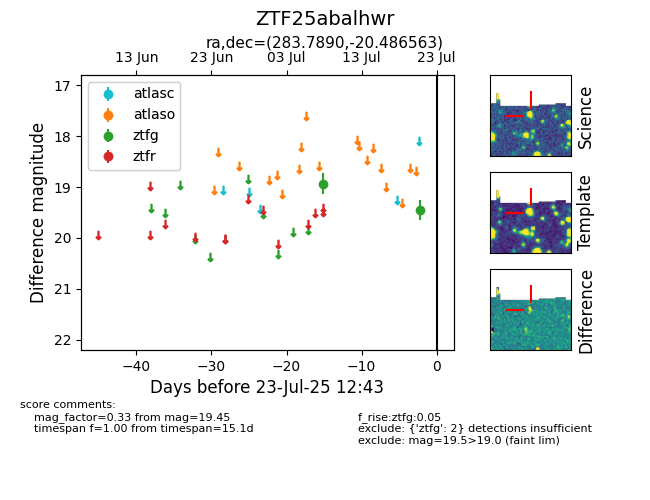

Target ZTF25abalhwr at 2025-07-23 12:43, see:
FINK: fink-portal.org/ZTF25abalhwr
Lasair: lasair-ztf.lsst.ac.uk/objects/ZTF25abalhwr
ALeRCE: alerce.online/object/ZTF25abalhwr
alt names
ZTF25abalhwr (ztf,fink)
coordinates:
equatorial (ra, dec) = (283.7890,-20.48656)
galactic (l, b) = (14.9195,-9.96893)
photometry
last ztfg=19.45
2 ztfg detections
